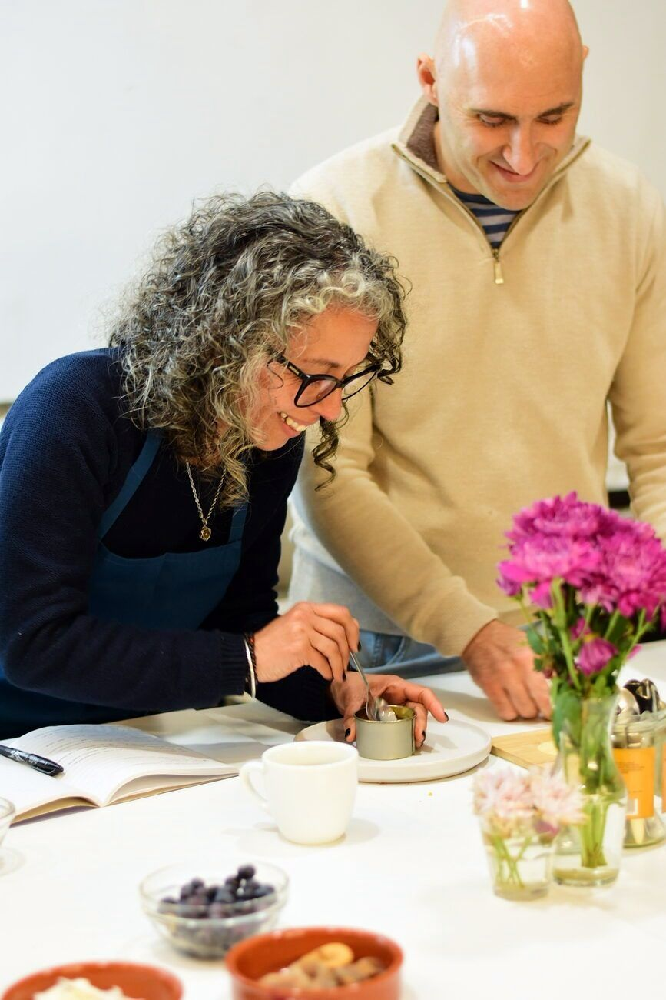
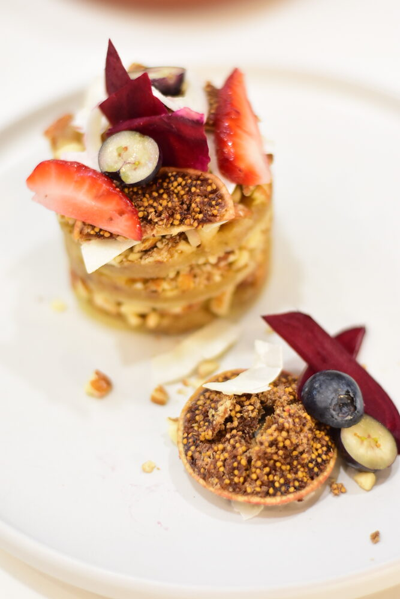
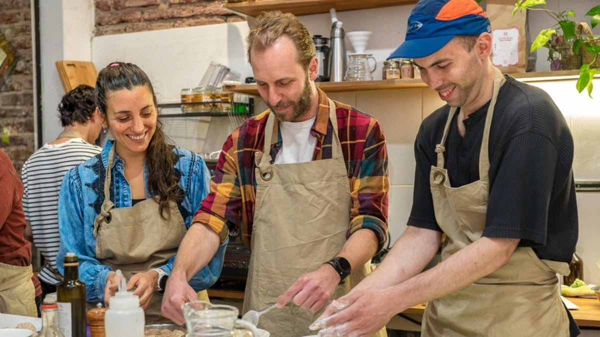
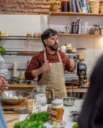

Las bases y las materias primas
Técnicas de corte y organización, bases vegetales, batidos verdes, sopas y la primera fermentación. Es lo que conviene tener resuelto antes de seguir cualquier receta.
Elaborás postres sin azúcares añadidos, quesos vegetales, fermentos, sushi, pastas, tartas saladas y platos principales completos.
La próxima edición todavía no tiene fecha.
El curso completo cuesta $12.200, o hasta 12 cuotas de $1.016 sin recargo con tarjeta.
¿Querés ver las 12 clases una por una? Mirá el programa completo.
Es una propuesta principalmente práctica, en Parque Rodó, Montevideo: empezamos por las bases y las materias primas, y avanzamos hacia los platos más elaborados.
Aprendés directamente con Leonardo Lemes, que lleva 25 años cocinando, 13 enseñando y más de 1.200 personas formadas.


4,9 en 23 reseñas en Google.
Tres meses con una progresión clara. No son clases sueltas.
Técnicas de corte y organización, bases vegetales, batidos verdes, sopas y la primera fermentación. Es lo que conviene tener resuelto antes de seguir cualquier receta.
Kéfir, kombucha y kimchi, cocina con hongos, platos salados complejos, quesos vegetales y seguridad alimentaria en las fermentaciones. Acá entendés por qué pasa cada cosa, no solo cómo se hace.
Pastelería basada en plantas, sushi vegetal, pastas, dal y el recetario final. Es el mes donde armás un menú completo por tu cuenta.
A las técnicas de cada mes les sumamos la ciencia del alimento, y otras recetas según cómo avanza cada grupo.

El mismo programa en dos horarios. Los grupos de esta edición ya arrancaron. Son chicos a propósito, para que puedas cocinar, preguntar y que Leonardo te corrija a vos.
Grupo cerrado
Miércoles
19:00 a 21:00 h
Empezó el miércoles 7 de octubre
Una clase por semana, 12 en total. Para quienes salen de trabajar y quieren cerrar el día cocinando.
Grupo cerrado
Jueves
10:00 a 12:00 h
Empezó el jueves 8 de octubre
Una clase por semana, 12 en total. El grupo de mañana, con el estudio tranquilo y luz de día.
Si te cambia el trabajo o surge un viaje, te movés de día mientras haya lugar, y la clase que faltes la recuperás.

Fundador de Clorofila. Coordina el curso.
Chef, docente e investigador gastronómico con 25 años de experiencia y 13 enseñando. Pionero en Uruguay en cocina basada en plantas, fermentación y comprensión científica del alimento.
Participa en el curso
Licenciada en Nutrición y terapeuta nutricional. Articula alimentación, cocina y bienestar desde una mirada integradora que va más allá de los macronutrientes. Desde 2020 acompaña procesos integrando Ayurveda, fitoterapia y nutrición informada en trauma.
«No es un curso de recetas. Es aprender a pensar la cocina de otra manera.»Lucía Fernández, curso de 3 meses
«Lo que más me sorprendió fue entender el porqué de cada técnica. Ahora improviso con lo que hay en casa y me sale bien.»Matías Acevedo, curso de 3 meses
«Excelente lugar para aprender a cocinar y a comer. Es mucho más que una receta, es aprender a crear tus propias recetas de la mano de los que saben.»Alessandra Nadile, reseña en Google
«Excelente curso, muy recomendable. Más allá de mis expectativas.»Mariela Pardo, reseña en Google
Son 3 meses: 12 clases de 2 horas, una por semana. Los grupos de esta edición empezaron el miércoles 7 de octubre y el jueves 8 de octubre. La próxima edición todavía no tiene fecha.
No. El curso está pensado tanto para quienes recién empiezan como para quienes ya cocinan y quieren profundizar. Arrancamos desde las bases.
Basada en plantas: vegetales, legumbres, hongos, semillas, granos y frutas. No hace falta alimentarse así todos los días: el criterio que desarrollás sirve para cualquier forma de cocinar.
Sí: todo lo que cocinamos en clase es 100% vegetal, sin ingredientes de origen animal, así que también sirve si sos vegetariano o si simplemente querés comer más plantas. Le decimos cocina basada en plantas porque el foco está en la técnica y no en una etiqueta alimentaria. No hace falta que seas vegano, ni que quieras serlo, para hacer el curso.
Las clases las podés recuperar. Coordinamos para que no pierdas contenido.
Transferencia bancaria (BROU), Abitab, RedPagos y MercadoPago. Con tarjeta, hasta 12 cuotas sin recargo: pagás el mismo total bonificado que de contado. Mes a mes también se puede, y ahí el total es un poco mayor.
Sí. Ingredientes, materiales, degustación y el recetario completo al finalizar. Todo incluido en el precio.
Sí. Al terminar los tres meses te entregamos un certificado del curso.
Sí, y pasa seguido. Tenés dos horarios y te movés entre ellos mientras haya lugar. Si te cambia el trabajo o te surge un viaje, avisanos y te reubicamos: nadie pierde el curso por un cambio de agenda.
Sí, tenemos gift card. Escribinos por WhatsApp y te la armamos.
Si no llegamos al cupo mínimo el grupo no se abre, te avisamos y te devolvemos el 100%. Y si el que no puede seguir sos vos, lo primero es buscarte lugar en otro horario, que es como se resuelve casi siempre. La inscripción en sí no se reintegra: los grupos son reducidos y tu lugar queda guardado para vos desde que te anotás.
Dejanos tu correo y te escribimos apenas tengamos las fechas nuevas.
Avisame de la próxima ediciónTu mail no se comparte con nadie.
Dejanos tus datos y te avisamos cuando abra la próxima. Te contesta Leonardo.
¿Querés ver todo el contenido clase por clase? El programa completo
¿Preferís probar antes con algo más corto? Los talleres de un día
¿Es para regalar? Tenemos gift card
El curso completo cuesta $12.200.
Son 12 clases de 2 horas, una por semana, durante tres meses. Los ingredientes y el recetario están incluidos.
La próxima edición todavía no tiene fecha.
¿No usás WhatsApp? Escribinos a nutreclorofila@gmail.com.
Estamos en Maldonado 1976 esq. Blanes, Parque Rodó. Cómo llegar